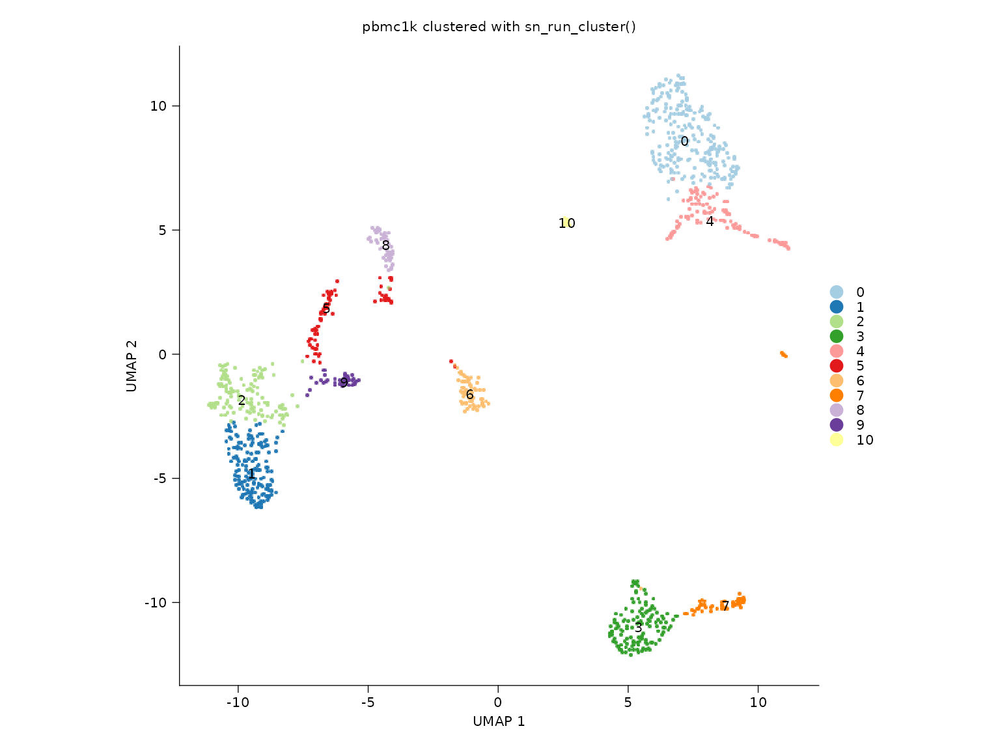
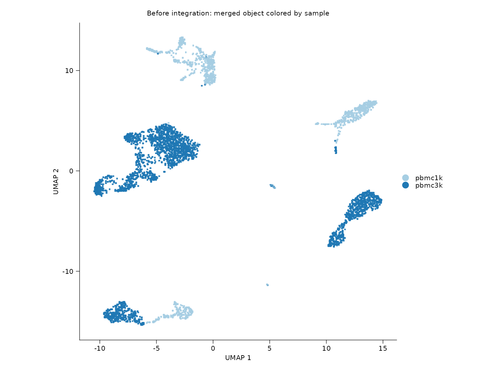
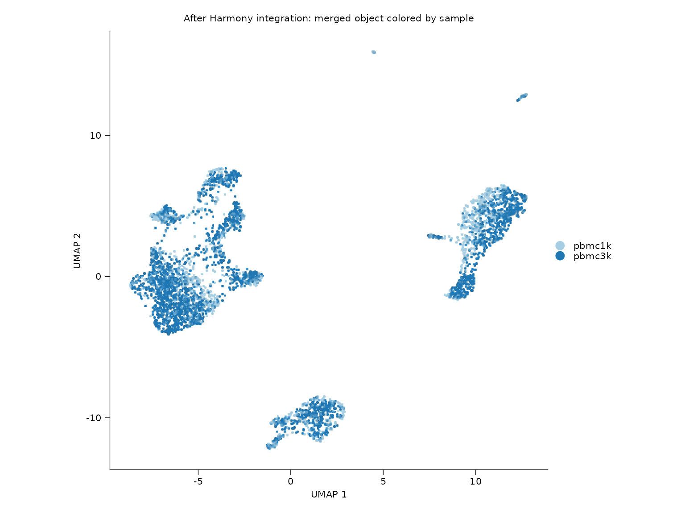
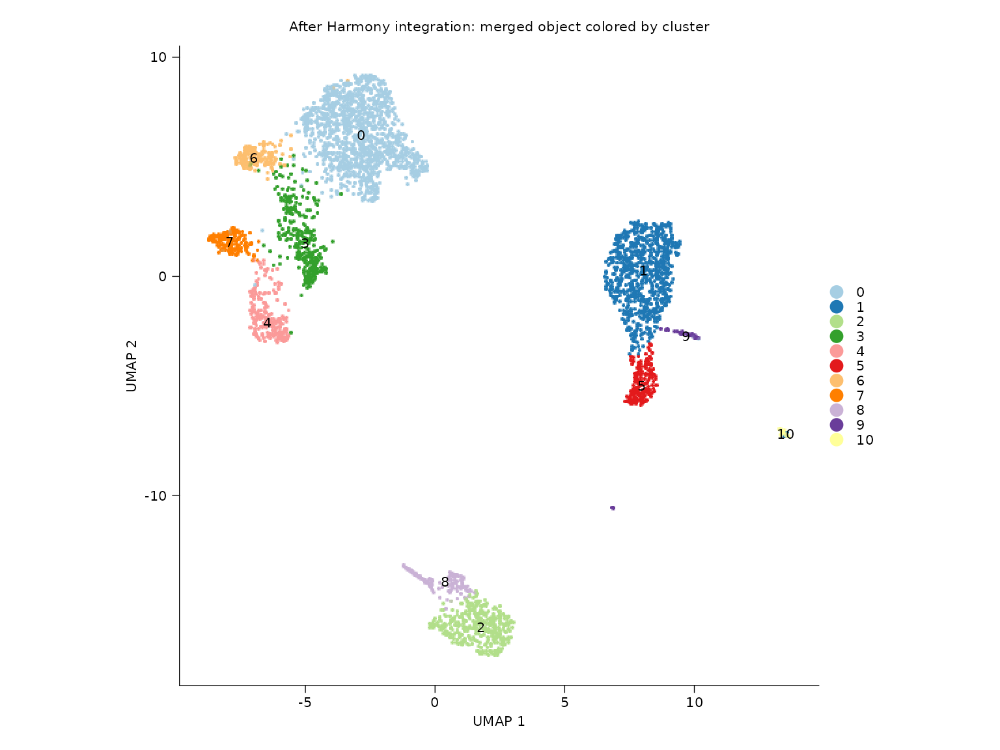
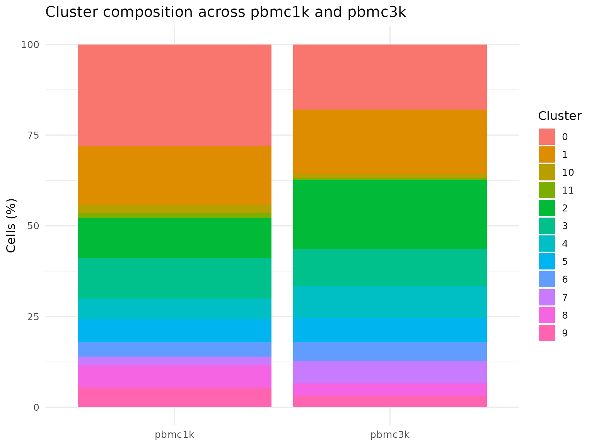
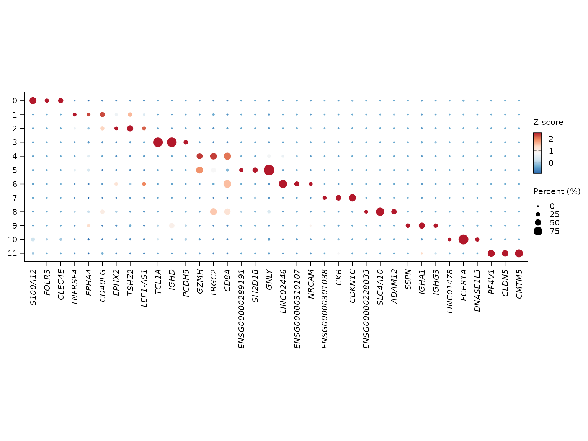

This article runs a complete PBMC analysis using the built-in
pbmc1k and pbmc3k example datasets. The
workflow covers QC-aware preprocessing, single-sample clustering,
pre/post integration comparison, sample composition summaries,
integration scoring with LISI, marker discovery, dot-plot visualization,
and functional enrichment from cluster markers.
To keep R CMD check deterministic, the analysis is only
evaluated when SHENNONG_RUN_VIGNETTES=true or during
pkgdown builds.
Data loaded for the workflow
knitr::kable(cell_summary, digits = 0)| dataset | cells | genes | clusters |
|---|---|---|---|
| pbmc1k | 1141 | 24986 | 11 |
| pbmc3k | 2671 | 19971 | NA |
| merged_unintegrated | 3812 | 25597 | 14 |
| merged_integrated | 3812 | 25597 | 12 |
The merged analysis is intentionally run twice: once without batch correction and once with Harmony integration. This makes the before/after comparison explicit instead of only showing the corrected embedding.
Single-sample clustering
sn_plot_dim(
object = pbmc1k_clustered,
reduction = "umap",
group_by = "seurat_clusters",
label = TRUE,
show_legend = FALSE,
title = "pbmc1k clustered with sn_run_cluster()"
)
Before and after Harmony integration
sn_plot_dim(
object = pbmc_unintegrated,
reduction = "umap",
group_by = "sample",
title = "Before integration: merged object colored by sample"
)
sn_plot_dim(
object = pbmc_integrated,
reduction = "umap",
group_by = "sample",
title = "After Harmony integration: merged object colored by sample"
)
sn_plot_dim(
object = pbmc_integrated,
reduction = "umap",
group_by = "seurat_clusters",
label = TRUE,
show_legend = FALSE,
title = "After Harmony integration: merged object colored by cluster"
)
Cluster composition by sample
knitr::kable(dplyr::slice_head(composition_tbl, n = 12), digits = 2)| sample | seurat_clusters | proportion |
|---|---|---|
| pbmc1k | 0 | 27.96 |
| pbmc1k | 1 | 16.39 |
| pbmc1k | 10 | 2.19 |
| pbmc1k | 11 | 1.31 |
| pbmc1k | 2 | 11.13 |
| pbmc1k | 3 | 11.04 |
| pbmc1k | 4 | 5.70 |
| pbmc1k | 5 | 6.22 |
| pbmc1k | 6 | 4.12 |
| pbmc1k | 7 | 2.28 |
| pbmc1k | 8 | 6.22 |
| pbmc1k | 9 | 5.43 |
sn_plot_barplot(
composition_tbl,
x = sample,
y = proportion,
fill = seurat_clusters
) +
labs(
title = "Cluster composition across pbmc1k and pbmc3k",
x = NULL,
y = "Cells (%)",
fill = "Cluster"
) +
theme_minimal(base_size = 12)
Integration quality summary with LISI
knitr::kable(lisi_summary, digits = 3)| state | min | q1 | median | mean | q3 | max |
|---|---|---|---|---|---|---|
| after_integration | 1.016 | 1.319 | 1.604 | 1.586 | 1.88 | 2 |
| before_integration | 1.000 | 1.000 | 1.000 | 1.024 | 1.00 | 2 |
Higher LISI values indicate better local sample mixing. In this two-sample example the theoretical maximum is 2, so the post-Harmony distribution should shift upward relative to the unintegrated baseline.
Marker genes from the integrated object
knitr::kable(marker_tbl, digits = 3)| cluster | gene | avg_log2FC | p_val_adj |
|---|---|---|---|
| 0 | S100A12 | 8.735 | 0 |
| 0 | FOLR3 | 8.434 | 0 |
| 0 | CLEC4E | 7.860 | 0 |
| 1 | TNFRSF4 | 3.518 | 0 |
| 1 | EPHA4 | 2.628 | 0 |
| 1 | CD40LG | 2.524 | 0 |
| 2 | EPHX2 | 3.171 | 0 |
| 2 | TSHZ2 | 2.971 | 0 |
| 2 | LEF1-AS1 | 2.883 | 0 |
| 3 | TCL1A | 8.152 | 0 |
| 3 | IGHD | 6.820 | 0 |
| 3 | PCDH9 | 6.483 | 0 |
| 4 | GZMH | 4.425 | 0 |
| 4 | TRGC2 | 4.098 | 0 |
| 4 | CD8A | 3.660 | 0 |
| 5 | ENSG00000289191 | 7.476 | 0 |
| 5 | SH2D1B | 7.247 | 0 |
| 5 | GNLY | 7.208 | 0 |
| 6 | LINC02446 | 5.743 | 0 |
| 6 | ENSG00000310107 | 4.810 | 0 |
| 6 | NRCAM | 4.544 | 0 |
| 7 | ENSG00000301038 | 8.422 | 0 |
| 7 | CKB | 7.007 | 0 |
| 7 | CDKN1C | 6.901 | 0 |
| 8 | ENSG00000228033 | 7.722 | 0 |
| 8 | SLC4A10 | 7.680 | 0 |
| 8 | ADAM12 | 6.637 | 0 |
| 9 | SSPN | 8.895 | 0 |
| 9 | IGHA1 | 8.236 | 0 |
| 9 | IGHG3 | 7.914 | 0 |
| 10 | LINC01478 | 10.546 | 0 |
| 10 | FCER1A | 9.146 | 0 |
| 10 | DNASE1L3 | 8.366 | 0 |
| 11 | PF4V1 | 15.127 | 0 |
| 11 | CLDN5 | 13.516 | 0 |
| 11 | CMTM5 | 12.998 | 0 |
sn_plot_dot(
x = pbmc_integrated,
features = "top_markers",
de_name = "cluster_markers",
n = 3
)
Functional enrichment of marker genes
The table below shows the first non-empty GO Biological Process GSEA result found among the cluster marker sets. In this run, enrichment was computed from cluster 0.
knitr::kable(enrichment_tbl, digits = 4)| ID | Description | NES | p.adjust | |
|---|---|---|---|---|
| GO:0006954 | GO:0006954 | inflammatory response | 1.6434 | 0 |
| GO:0006952 | GO:0006952 | defense response | 1.4651 | 0 |
| GO:0051239 | GO:0051239 | regulation of multicellular organismal process | 1.4272 | 0 |
| GO:0006955 | GO:0006955 | immune response | 1.4321 | 0 |
| GO:0032101 | GO:0032101 | regulation of response to external stimulus | 1.5025 | 0 |
| GO:0009617 | GO:0009617 | response to bacterium | 1.5958 | 0 |
| GO:0009605 | GO:0009605 | response to external stimulus | 1.4004 | 0 |
| GO:0002682 | GO:0002682 | regulation of immune system process | 1.4234 | 0 |
| GO:0050727 | GO:0050727 | regulation of inflammatory response | 1.6908 | 0 |
| GO:0031347 | GO:0031347 | regulation of defense response | 1.5254 | 0 |
sessioninfo::session_info()
#> ─ Session info ───────────────────────────────────────────────────────────────
#> setting value
#> version R version 4.5.3 (2026-03-11)
#> os Ubuntu 24.04.3 LTS
#> system x86_64, linux-gnu
#> ui X11
#> language en
#> collate C.UTF-8
#> ctype C.UTF-8
#> tz UTC
#> date 2026-03-21
#> pandoc 3.1.11 @ /opt/hostedtoolcache/pandoc/3.1.11/x64/ (via rmarkdown)
#> quarto NA
#>
#> ─ Packages ───────────────────────────────────────────────────────────────────
#> package * version date (UTC) lib source
#> abind 1.4-8 2024-09-12 [1] CRAN (R 4.5.3)
#> AnnotationDbi 1.72.0 2025-10-29 [1] Bioconduc~
#> ape 5.8-1 2024-12-16 [1] CRAN (R 4.5.3)
#> aplot 0.2.9 2025-09-12 [1] CRAN (R 4.5.3)
#> Biobase 2.70.0 2025-10-29 [1] Bioconduc~
#> BiocGenerics 0.56.0 2025-10-29 [1] Bioconduc~
#> BiocParallel 1.44.0 2025-10-29 [1] Bioconduc~
#> Biostrings 2.78.0 2025-10-29 [1] Bioconduc~
#> bit 4.6.0 2025-03-06 [1] CRAN (R 4.5.3)
#> bit64 4.6.0-1 2025-01-16 [1] CRAN (R 4.5.3)
#> blob 1.3.0 2026-01-14 [1] CRAN (R 4.5.3)
#> bslib 0.10.0 2026-01-26 [1] CRAN (R 4.5.3)
#> cachem 1.1.0 2024-05-16 [1] CRAN (R 4.5.3)
#> catplot 0.1.0 2026-03-19 [1] Github (catplot/catplot@0fc2344)
#> cli 3.6.5 2025-04-23 [1] CRAN (R 4.5.3)
#> cluster 2.1.8.2 2026-02-05 [3] CRAN (R 4.5.3)
#> clusterProfiler 4.18.4 2025-12-15 [1] any (@4.18.4)
#> codetools 0.2-20 2024-03-31 [3] CRAN (R 4.5.3)
#> cowplot 1.2.0 2025-07-07 [1] CRAN (R 4.5.3)
#> crayon 1.5.3 2024-06-20 [1] CRAN (R 4.5.3)
#> curl 7.0.0 2025-08-19 [1] CRAN (R 4.5.3)
#> data.table 1.18.2.1 2026-01-27 [1] CRAN (R 4.5.3)
#> DBI 1.3.0 2026-02-25 [1] CRAN (R 4.5.3)
#> deldir 2.0-4 2024-02-28 [1] CRAN (R 4.5.3)
#> desc 1.4.3 2023-12-10 [1] CRAN (R 4.5.3)
#> digest 0.6.39 2025-11-19 [1] CRAN (R 4.5.3)
#> DOSE 4.4.0 2025-10-29 [1] Bioconduc~
#> dotCall64 1.2 2024-10-04 [1] CRAN (R 4.5.3)
#> dplyr * 1.2.0 2026-02-03 [1] CRAN (R 4.5.3)
#> enrichplot 1.30.5 2026-03-02 [1] Bioconduc~
#> evaluate 1.0.5 2025-08-27 [1] CRAN (R 4.5.3)
#> farver 2.1.2 2024-05-13 [1] CRAN (R 4.5.3)
#> fastDummies 1.7.5 2025-01-20 [1] CRAN (R 4.5.3)
#> fastmap 1.2.0 2024-05-15 [1] CRAN (R 4.5.3)
#> fastmatch 1.1-8 2026-01-17 [1] CRAN (R 4.5.3)
#> fgsea 1.36.2 2026-01-05 [1] Bioconduc~
#> fitdistrplus 1.2-6 2026-01-24 [1] CRAN (R 4.5.3)
#> fontBitstreamVera 0.1.1 2017-02-01 [1] CRAN (R 4.5.3)
#> fontLiberation 0.1.0 2016-10-15 [1] CRAN (R 4.5.3)
#> fontquiver 0.2.1 2017-02-01 [1] CRAN (R 4.5.3)
#> fs 1.6.7 2026-03-06 [1] CRAN (R 4.5.3)
#> future * 1.70.0 2026-03-14 [1] CRAN (R 4.5.3)
#> future.apply 1.20.2 2026-02-20 [1] CRAN (R 4.5.3)
#> gdtools 0.5.0 2026-02-09 [1] CRAN (R 4.5.3)
#> generics 0.1.4 2025-05-09 [1] CRAN (R 4.5.3)
#> ggforce 0.5.0 2025-06-18 [1] CRAN (R 4.5.3)
#> ggfun 0.2.0 2025-07-15 [1] CRAN (R 4.5.3)
#> ggiraph 0.9.6 2026-02-21 [1] CRAN (R 4.5.3)
#> ggnewscale 0.5.2 2025-06-20 [1] CRAN (R 4.5.3)
#> ggplot2 * 4.0.2 2026-02-03 [1] CRAN (R 4.5.3)
#> ggplotify 0.1.3 2025-09-20 [1] CRAN (R 4.5.3)
#> ggrepel 0.9.8 2026-03-17 [1] CRAN (R 4.5.3)
#> ggridges 0.5.7 2025-08-27 [1] CRAN (R 4.5.3)
#> ggtangle 0.1.1 2026-01-16 [1] CRAN (R 4.5.3)
#> ggtree 4.0.5 2026-03-17 [1] Bioconduc~
#> globals 0.19.1 2026-03-13 [1] CRAN (R 4.5.3)
#> glue 1.8.0 2024-09-30 [1] CRAN (R 4.5.3)
#> GO.db 3.22.0 2026-03-19 [1] Bioconductor
#> goftest 1.2-3 2021-10-07 [1] CRAN (R 4.5.3)
#> GOSemSim 2.36.0 2025-10-29 [1] Bioconduc~
#> gridExtra 2.3 2017-09-09 [1] CRAN (R 4.5.3)
#> gridGraphics 0.5-1 2020-12-13 [1] CRAN (R 4.5.3)
#> gson 0.1.0 2023-03-07 [1] CRAN (R 4.5.3)
#> gtable 0.3.6 2024-10-25 [1] CRAN (R 4.5.3)
#> harmony 1.2.4 2025-10-10 [1] any (@1.2.4)
#> hdf5r 1.3.12 2025-01-20 [1] any (@1.3.12)
#> HGNChelper 0.8.15 2024-11-16 [1] any (@0.8.15)
#> htmltools 0.5.9 2025-12-04 [1] CRAN (R 4.5.3)
#> htmlwidgets 1.6.4 2023-12-06 [1] CRAN (R 4.5.3)
#> httpuv 1.6.17 2026-03-18 [1] CRAN (R 4.5.3)
#> httr 1.4.8 2026-02-13 [1] CRAN (R 4.5.3)
#> ica 1.0-3 2022-07-08 [1] CRAN (R 4.5.3)
#> igraph 2.2.2 2026-02-12 [1] CRAN (R 4.5.3)
#> IRanges 2.44.0 2025-10-29 [1] Bioconduc~
#> irlba 2.3.7 2026-01-30 [1] CRAN (R 4.5.3)
#> jquerylib 0.1.4 2021-04-26 [1] CRAN (R 4.5.3)
#> jsonlite 2.0.0 2025-03-27 [1] CRAN (R 4.5.3)
#> KEGGREST 1.50.0 2025-10-29 [1] Bioconduc~
#> KernSmooth 2.23-26 2025-01-01 [3] CRAN (R 4.5.3)
#> knitr * 1.51 2025-12-20 [1] CRAN (R 4.5.3)
#> labeling 0.4.3 2023-08-29 [1] CRAN (R 4.5.3)
#> later 1.4.8 2026-03-05 [1] CRAN (R 4.5.3)
#> lattice 0.22-9 2026-02-09 [3] CRAN (R 4.5.3)
#> lazyeval 0.2.2 2019-03-15 [1] CRAN (R 4.5.3)
#> lifecycle 1.0.5 2026-01-08 [1] CRAN (R 4.5.3)
#> limma 3.66.0 2025-10-29 [1] Bioconduc~
#> lisi 1.0 2026-03-19 [1] Github (immunogenomics/lisi@a917556)
#> listenv 0.10.1 2026-03-10 [1] CRAN (R 4.5.3)
#> lmtest 0.9-40 2022-03-21 [1] CRAN (R 4.5.3)
#> logger 0.4.1 2025-09-11 [1] CRAN (R 4.5.3)
#> magrittr 2.0.4 2025-09-12 [1] CRAN (R 4.5.3)
#> MASS 7.3-65 2025-02-28 [3] CRAN (R 4.5.3)
#> Matrix 1.7-4 2025-08-28 [3] CRAN (R 4.5.3)
#> matrixStats 1.5.0 2025-01-07 [1] CRAN (R 4.5.3)
#> memoise 2.0.1 2021-11-26 [1] CRAN (R 4.5.3)
#> mime 0.13 2025-03-17 [1] CRAN (R 4.5.3)
#> miniUI 0.1.2 2025-04-17 [1] CRAN (R 4.5.3)
#> nlme 3.1-168 2025-03-31 [3] CRAN (R 4.5.3)
#> org.Hs.eg.db 3.22.0 2026-03-19 [1] bioc (@3.22.0)
#> otel 0.2.0 2025-08-29 [1] CRAN (R 4.5.3)
#> parallelly 1.46.1 2026-01-08 [1] CRAN (R 4.5.3)
#> patchwork 1.3.2 2025-08-25 [1] CRAN (R 4.5.3)
#> pbapply 1.7-4 2025-07-20 [1] CRAN (R 4.5.3)
#> pillar 1.11.1 2025-09-17 [1] CRAN (R 4.5.3)
#> pkgconfig 2.0.3 2019-09-22 [1] CRAN (R 4.5.3)
#> pkgdown 2.2.0 2025-11-06 [1] any (@2.2.0)
#> plotly 4.12.0 2026-01-24 [1] CRAN (R 4.5.3)
#> plyr 1.8.9 2023-10-02 [1] CRAN (R 4.5.3)
#> png 0.1-9 2026-03-15 [1] CRAN (R 4.5.3)
#> polyclip 1.10-7 2024-07-23 [1] CRAN (R 4.5.3)
#> progressr 0.18.0 2025-11-06 [1] CRAN (R 4.5.3)
#> promises 1.5.0 2025-11-01 [1] CRAN (R 4.5.3)
#> purrr 1.2.1 2026-01-09 [1] CRAN (R 4.5.3)
#> qvalue 2.42.0 2025-10-29 [1] Bioconduc~
#> R.methodsS3 1.8.2 2022-06-13 [1] CRAN (R 4.5.3)
#> R.oo 1.27.1 2025-05-02 [1] CRAN (R 4.5.3)
#> R.utils 2.13.0 2025-02-24 [1] CRAN (R 4.5.3)
#> R6 2.6.1 2025-02-15 [1] CRAN (R 4.5.3)
#> ragg 1.5.1 2026-03-06 [1] CRAN (R 4.5.3)
#> RANN 2.6.2 2024-08-25 [1] CRAN (R 4.5.3)
#> rappdirs 0.3.4 2026-01-17 [1] CRAN (R 4.5.3)
#> RColorBrewer 1.1-3 2022-04-03 [1] CRAN (R 4.5.3)
#> Rcpp 1.1.1 2026-01-10 [1] CRAN (R 4.5.3)
#> RcppAnnoy 0.0.23 2026-01-12 [1] CRAN (R 4.5.3)
#> RcppHNSW 0.6.0 2024-02-04 [1] CRAN (R 4.5.3)
#> reshape2 1.4.5 2025-11-12 [1] CRAN (R 4.5.3)
#> reticulate 1.45.0 2026-02-13 [1] CRAN (R 4.5.3)
#> RhpcBLASctl 0.23-42 2023-02-11 [1] CRAN (R 4.5.3)
#> rio 1.2.4 2025-09-26 [1] any (@1.2.4)
#> rlang 1.1.7 2026-01-09 [1] CRAN (R 4.5.3)
#> rmarkdown 2.30 2025-09-28 [1] CRAN (R 4.5.3)
#> ROCR 1.0-12 2026-01-23 [1] CRAN (R 4.5.3)
#> RSpectra 0.16-2 2024-07-18 [1] CRAN (R 4.5.3)
#> RSQLite 2.4.6 2026-02-06 [1] CRAN (R 4.5.3)
#> Rtsne 0.17 2023-12-07 [1] CRAN (R 4.5.3)
#> S4Vectors 0.48.0 2025-10-29 [1] Bioconduc~
#> S7 0.2.1 2025-11-14 [1] CRAN (R 4.5.3)
#> sass 0.4.10 2025-04-11 [1] CRAN (R 4.5.3)
#> scales 1.4.0 2025-04-24 [1] CRAN (R 4.5.3)
#> scattermore 1.2 2023-06-12 [1] CRAN (R 4.5.3)
#> scatterpie 0.2.6 2025-09-12 [1] CRAN (R 4.5.3)
#> sctransform 0.4.3 2026-01-10 [1] CRAN (R 4.5.3)
#> Seqinfo 1.0.0 2025-10-29 [1] Bioconduc~
#> sessioninfo 1.2.3 2025-02-05 [1] any (@1.2.3)
#> Seurat * 5.4.0 2025-12-14 [1] any (@5.4.0)
#> SeuratObject * 5.3.0 2025-12-12 [1] CRAN (R 4.5.3)
#> Shennong * 0.1.1 2026-03-21 [1] local
#> shiny 1.13.0 2026-02-20 [1] CRAN (R 4.5.3)
#> sp * 2.2-1 2026-02-13 [1] CRAN (R 4.5.3)
#> spam 2.11-3 2026-01-08 [1] CRAN (R 4.5.3)
#> spatstat.data 3.1-9 2025-10-18 [1] CRAN (R 4.5.3)
#> spatstat.explore 3.7-0 2026-01-22 [1] CRAN (R 4.5.3)
#> spatstat.geom 3.7-2 2026-03-21 [1] CRAN (R 4.5.3)
#> spatstat.random 3.4-4 2026-01-21 [1] CRAN (R 4.5.3)
#> spatstat.sparse 3.1-0 2024-06-21 [1] CRAN (R 4.5.3)
#> spatstat.univar 3.1-7 2026-03-18 [1] CRAN (R 4.5.3)
#> spatstat.utils 3.2-2 2026-03-10 [1] CRAN (R 4.5.3)
#> splitstackshape 1.4.8.1 2026-03-21 [1] CRAN (R 4.5.3)
#> statmod 1.5.1 2025-10-09 [1] CRAN (R 4.5.3)
#> stringi 1.8.7 2025-03-27 [1] CRAN (R 4.5.3)
#> stringr 1.6.0 2025-11-04 [1] CRAN (R 4.5.3)
#> survival 3.8-6 2026-01-16 [3] CRAN (R 4.5.3)
#> systemfonts 1.3.2 2026-03-05 [1] CRAN (R 4.5.3)
#> tensor 1.5.1 2025-06-17 [1] CRAN (R 4.5.3)
#> textshaping 1.0.5 2026-03-06 [1] CRAN (R 4.5.3)
#> tibble 3.3.1 2026-01-11 [1] CRAN (R 4.5.3)
#> tictoc 1.2.1 2024-03-18 [1] CRAN (R 4.5.3)
#> tidydr 0.0.6 2025-07-25 [1] CRAN (R 4.5.3)
#> tidyr 1.3.2 2025-12-19 [1] CRAN (R 4.5.3)
#> tidyselect 1.2.1 2024-03-11 [1] CRAN (R 4.5.3)
#> tidytree 0.4.7 2026-01-08 [1] CRAN (R 4.5.3)
#> treeio 1.34.0 2025-10-30 [1] Bioconduc~
#> tweenr 2.0.3 2024-02-26 [1] CRAN (R 4.5.3)
#> uwot 0.2.4 2025-11-10 [1] CRAN (R 4.5.3)
#> vctrs 0.7.2 2026-03-21 [1] CRAN (R 4.5.3)
#> viridisLite 0.4.3 2026-02-04 [1] CRAN (R 4.5.3)
#> withr 3.0.2 2024-10-28 [1] CRAN (R 4.5.3)
#> xfun 0.57 2026-03-20 [1] CRAN (R 4.5.3)
#> xtable 1.8-8 2026-02-22 [1] CRAN (R 4.5.3)
#> XVector 0.50.0 2025-10-29 [1] Bioconduc~
#> yaml 2.3.12 2025-12-10 [1] CRAN (R 4.5.3)
#> yulab.utils 0.2.4 2026-02-02 [1] CRAN (R 4.5.3)
#> zoo 1.8-15 2025-12-15 [1] CRAN (R 4.5.3)
#>
#> [1] /home/runner/work/_temp/Library
#> [2] /opt/R/4.5.3/lib/R/site-library
#> [3] /opt/R/4.5.3/lib/R/library
#> * ── Packages attached to the search path.
#>
#> ──────────────────────────────────────────────────────────────────────────────